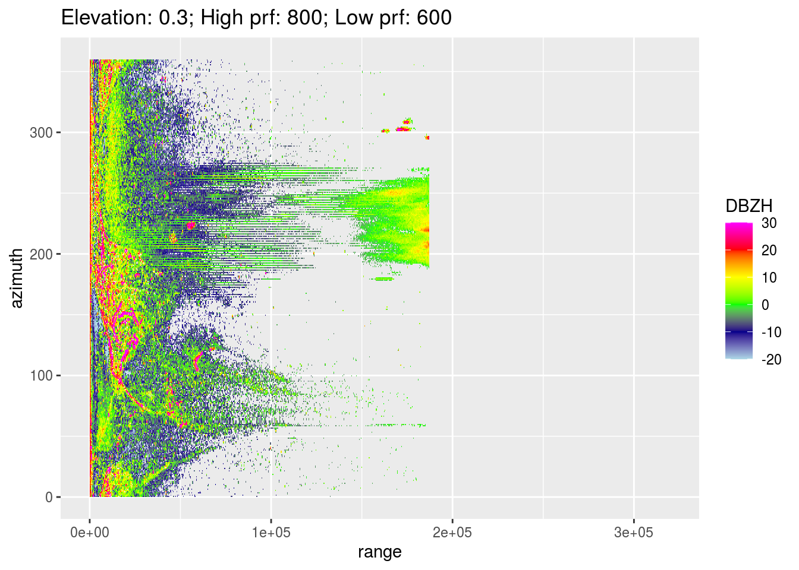
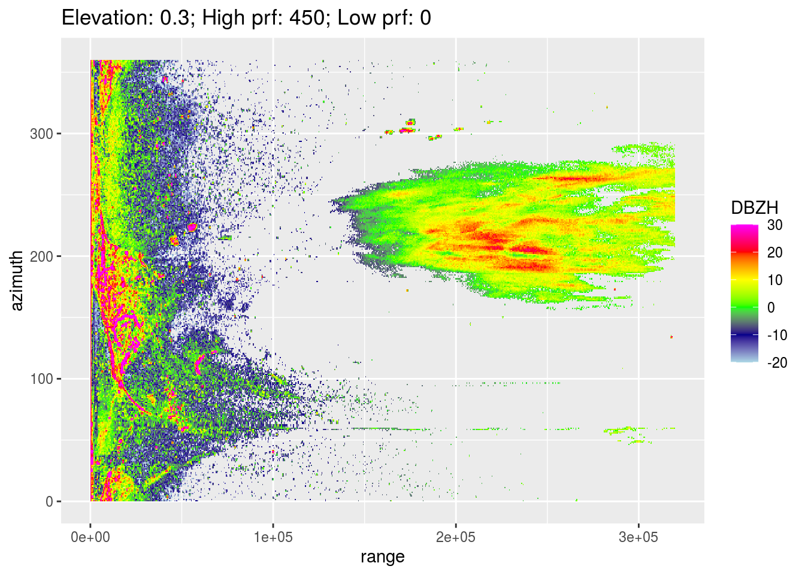
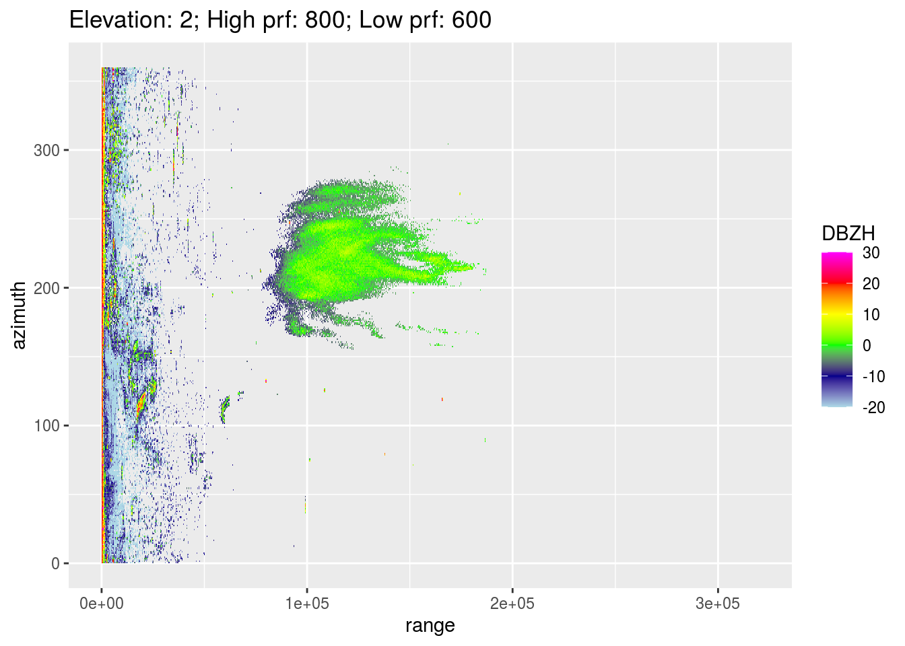
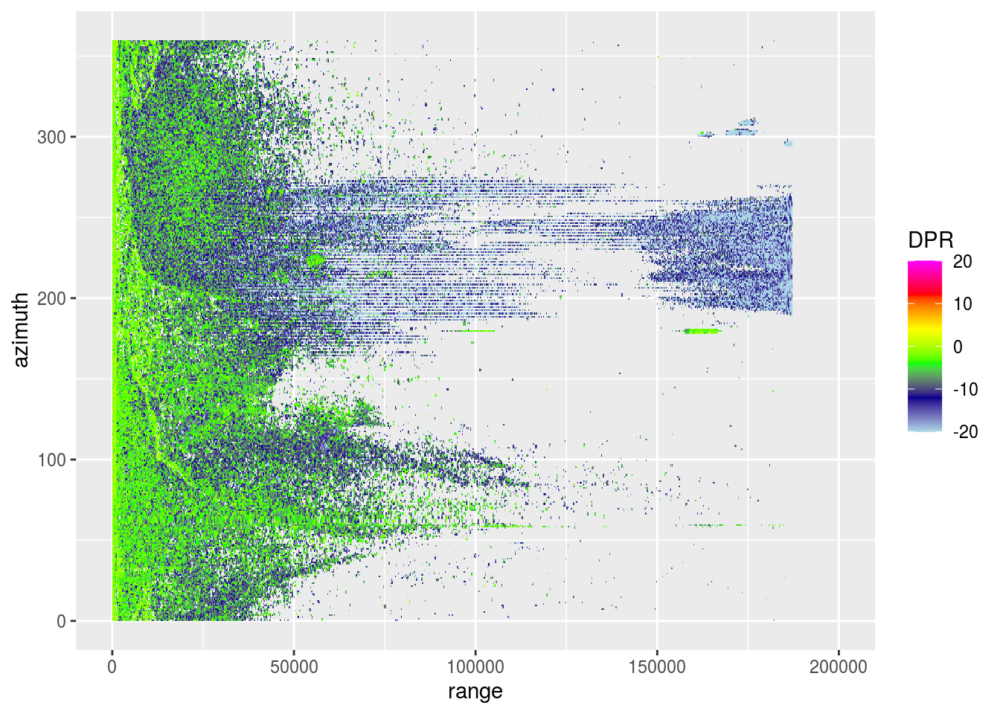
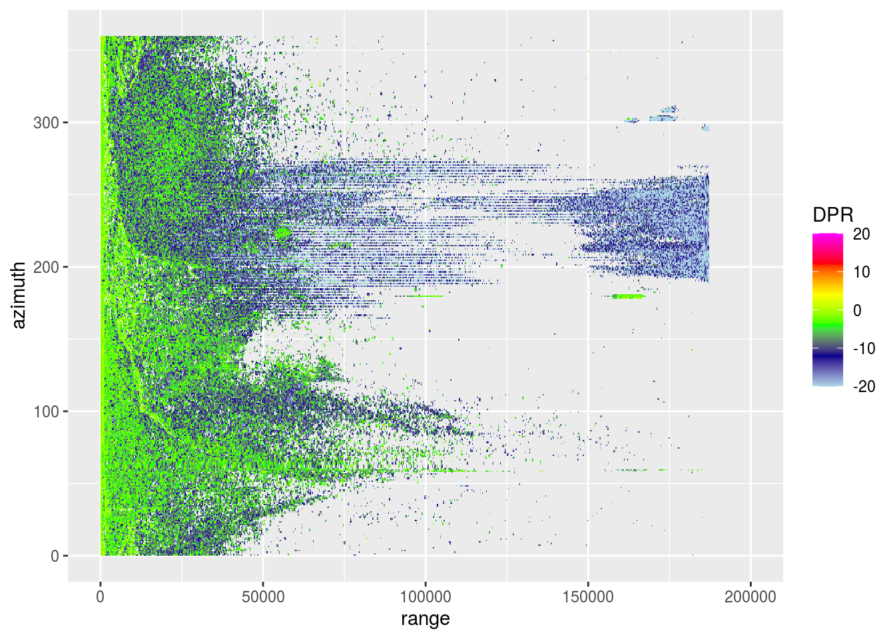
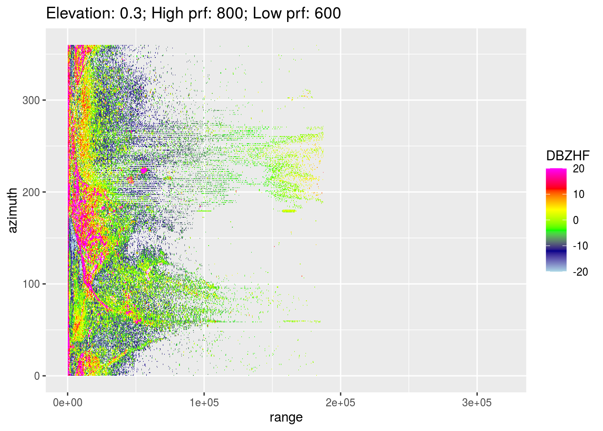
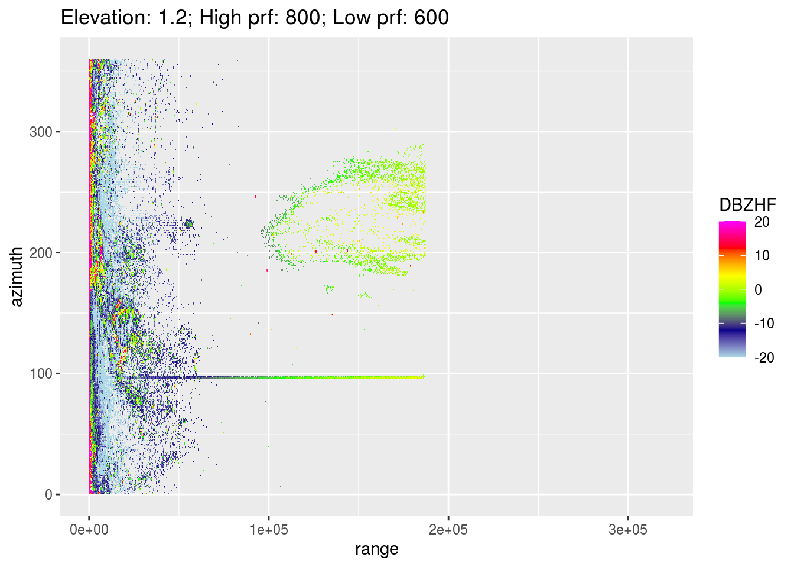
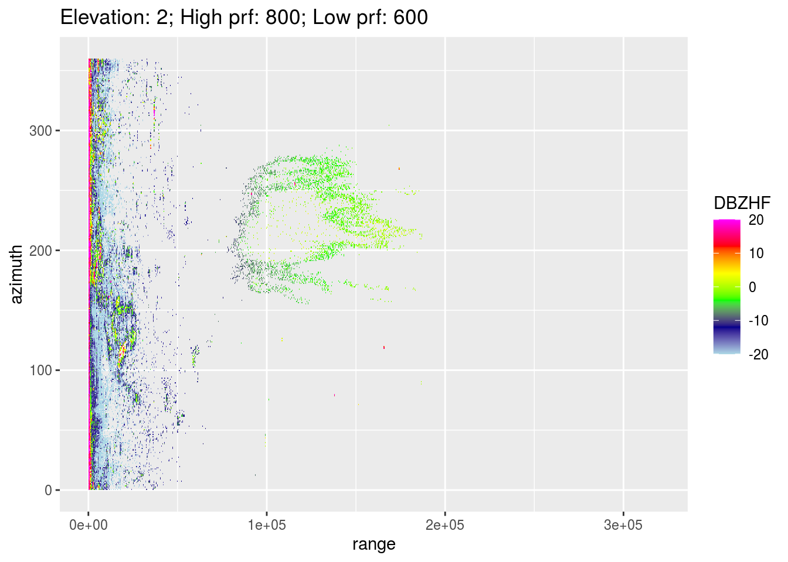
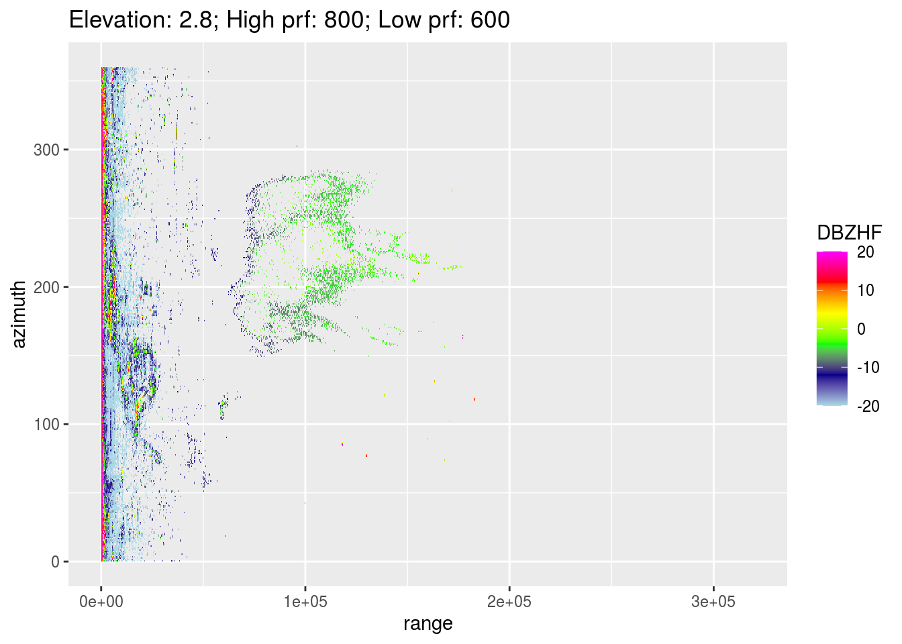

1 Banding
A for now unexplained banding phenomenon shows up in some cases in the lower elevation scans of the Dutch radars. This appears to be the result of something going on in the dual-PRF scans, especially in the vicinity of clutter sources at sea (wind parks, ships).
1.1 The problem
Let’s load an example scan and calculate the RBC PPI which shows the issue clearly.
pvolfile <- "data/20201002/NLDHL_pvol_20201002T0550_6234.h5"
pvol <- read_pvolfile(file = pvolfile, param = "all")
vp <- calculate_vp(pvolfile, verbose = FALSE)
ppi_banding <- integrate_to_ppi(pvol, vp, xlim = c(-180000, 180000), ylim = c(-180000, 180000), res = 500, param = "DBZH")
plot_banding <- plot(ppi_banding) + ggtitle("Original RBC PPI")
plot_bandingFor this pvol we create a \((r, a)\) range-azimuth plot for the 7 lowest scans, as the issue is not visible at higher elevations in this scan. Though it may still occur there, due to the elevations of the highest scans it will not have a clear effect on the PPIs anyways.
elevs <- get_elevation_angles(pvol)
nr_elevs <- 1:7
lapply(nr_elevs, function(x) {
plot(pvol$scans[[x]], xlim = c(0, 320000)) +
ggtitle(paste0("Elevation: ", round(elevs[x], 2),
"; High prf: ", pvol$scans[[x]]$attributes$how$highprf,
"; Low prf: ", pvol$scans[[x]]$attributes$how$lowprf))
})
This suggests it’s related to the dual-PRF scans indeed, which are the most common scans in the Dutch radar, so we cannot just throw them out and they serve an important purpose: the unambiguous velocities for these dual-PRF scans is highest, so the VRAD values are least likely to fold/alias. The following scans use dual-PRFs.
get_elevation_angles(pvol)[which(sapply(pvol$scans, function(x) x$attributes$how$highprf != 0 & x$attributes$how$lowprf != 0))]## [1] 0.3 0.8 1.2 2.0 2.8 4.5 6.0 8.0 10.0 12.0 15.0 20.0 25.0In other words, there are only 3 elevations at which this is not in use, which are two \(0.3^\circ\) scans and the bird-bath scan at \(90^\circ\), so it’s not an option, and would be a waste, to throw the dual-PRF scans out.
1.2 Solution
We can plot the other parameters of a single elevation scan to see if there are possibilities to filter the banding issue out.
pvol <- calculate_param(pvol,
ZDRL = 10 ** ((DBZH - DBZV) /10),
DPR = 10 * log10((ZDRL + 1 - 2 * ZDRL^0.5 * RHOHV) / (ZDRL + 1 + 2 * ZDRL^ 0.5 * RHOHV)))
lapply(c("DBZH", "VRADH", "RHOHV", "DPR"), function(x) plot(pvol$scans[[1]], xlim = c(0, 200000), param = x)) 

It seems that both RHOHV and DPR will sufficient to filter out the majority of these areas where this banding pattern occurs. In fact, a standard rain filter and some de-speckling (using RHOHV > 0.95 or DPR < -12) would probably have unintentionally done the same. We can apply such a filter and plot the results again.
pvol <- calculate_param(pvol, RAIN = RHOHV >= 0.95, DBZHF = DBZH)
pvol$scans <- lapply(pvol$scans, function(x) {
dbzh <- x$params[["DBZH"]]
rhohv <- x$params[["RHOHV"]]
dpr <- x$params[["DPR"]]
dbzh[rhohv >= 0.95] <- NA
dbzh[dpr < -12] <- NA
x$params[["DBZHF"]] <- dbzh
return(x)
})
lapply(nr_elevs, function(x) {
plot(pvol$scans[[x]], xlim = c(0, 320000), param = "DBZHF") +
ggtitle(paste0("Elevation: ", round(elevs[x], 2),
"; High prf: ", pvol$scans[[x]]$attributes$how$highprf,
"; Low prf: ", pvol$scans[[x]]$attributes$how$lowprf))
})
Now we recalculate the RBC (right) and compare the results with the initial version with banding (left).
pvol_filtered <- calculate_param(pvol, DBZH = DBZHF)
ppi_nobanding <- integrate_to_ppi(pvol_filtered, vp, xlim = c(-180000, 180000), ylim = c(-180000, 180000), res = 500)
plot_nobanding <- plot(ppi_nobanding) + ggtitle("Filtered RBC PPI")
plot_banding + plot_nobanding + plot_layout(guides = "collect")That’s much better already.
Finally, an example of a moment the Herwijnen radar shows substantial banding (left), and the same moment filtered quite a bit (right). We load the following pvol: NLHRW_pvol_20201002T1350_6356.h5.

Obviously rain-filtering needs some more work, in particular smoothing or despeckling, but approaches that improve precipitation filtering will presumably automatically improve filtering of this banding issue as well.